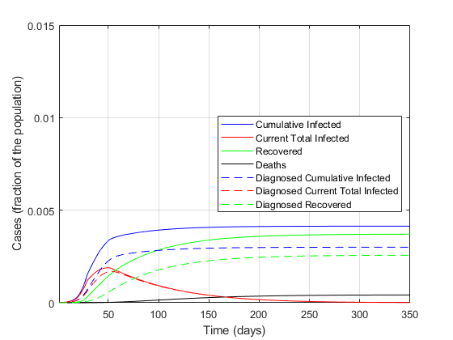
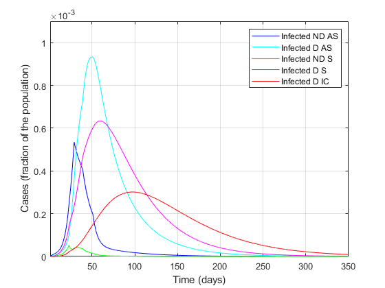

clear all
close all
clc
popolazione=60e6;
Orizzonte = 350;
plotPDF = 0;
step=0.01;
alfa=0.57;
beta=0.0114;
gamma=0.456;
delta=0.0114;
epsilon=0.171;
theta=0.3705;
zeta=0.1254;
eta=0.1254;
mu=0.0171;
nu=0.0274;
tau=0.01;
lambda=0.0342;
rho=0.0342;
kappa=0.0171;
xi=0.0171;
sigma=0.0171;
ki=0;
r1=epsilon+zeta+lambda;
r2=eta+rho;
r3=theta+mu+kappa;
r4=nu+xi;
r5=sigma+tau;
R0_iniziale=alfa/r1+beta*epsilon/(r1*r2)+gamma*zeta/(r1*r3)+delta*eta*epsilon/(r1*r2*r4)+delta*zeta*theta/(r1*r3*r4)
t=1:step:Orizzonte;
S=zeros(1,length(t));
I=zeros(1,length(t));
D=zeros(1,length(t));
A=zeros(1,length(t));
R=zeros(1,length(t));
T=zeros(1,length(t));
H=zeros(1,length(t));
H_diagnosticati=zeros(1,length(t));
E=zeros(1,length(t));
M=zeros(1,length(t));
P=zeros(1,length(t));
I(1)=200/popolazione;
D(1)=20/popolazione;
A(1)=1/popolazione;
R(1)=2/popolazione;
T(1)=0.00;
H(1)=0.00;
E(1)=0.00;
S(1)=1-I(1)-D(1)-A(1)-R(1)-T(1)-H(1)-E(1);
H_diagnosticati(1) = 0.00;
Infetti_reali(1)=I(1)+D(1)+A(1)+R(1)+T(1);
M(1)=0;
P(1)=0;
x=[S(1);I(1);D(1);A(1);R(1);T(1);H(1);E(1);H_diagnosticati(1);Infetti_reali(1)];
plottato = 0;
plottato1 = 0;
plottato_bis = 0;
plottato_tris = 0;
plottato_quat = 0;
plottato_fin = 0;
for i=2:length(t)
if (i>4/step)
alfa=0.4218;
gamma=0.285;
beta = 0.0057;
delta=0.0057;
if plottato == 0
r1=epsilon+zeta+lambda;
r2=eta+rho;
r3=theta+mu+kappa;
r4=nu+xi;
r5=sigma+tau;
R0_primemisure=alfa/r1+beta*epsilon/(r1*r2)+gamma*zeta/(r1*r3)+delta*eta*epsilon/(r1*r2*r4)+delta*zeta*theta/(r1*r3*r4)
plottato = 1;
end
end
if (i>12/step)
epsilon=0.1425;
if plottato1 == 0
r1=epsilon+zeta+lambda;
r2=eta+rho;
r3=theta+mu+kappa;
r4=nu+xi;
r5=sigma+tau;
R0_primemisureeps=alfa/r1+beta*epsilon/(r1*r2)+gamma*zeta/(r1*r3)+delta*eta*epsilon/(r1*r2*r4)+delta*zeta*theta/(r1*r3*r4)
plottato1 = 1;
end
end
if (i>22/step)
alfa=0.36;
beta=0.005;
gamma=0.2;
delta=0.005;
mu = 0.008;
nu = 0.015;
zeta=0.034;
eta=0.034;
lambda=0.08;
rho=0.0171;
kappa=0.0171;
xi=0.0171;
sigma=0.0171;
if plottato_bis == 0
r1=epsilon+zeta+lambda;
r2=eta+rho;
r3=theta+mu+kappa;
r4=nu+xi;
r5=sigma+tau;
R0_secondemisure=(alfa*r2*r3*r4+epsilon*beta*r3*r4+gamma*zeta*r2*r4+delta*eta*epsilon*r3+delta*zeta*theta*r2)/(r1*r2*r3*r4)
plottato_bis = 1;
end
end
if (i>28/step)
alfa=0.21;
gamma=0.11;
if plottato_tris == 0
r1=epsilon+zeta+lambda;
r2=eta+rho;
r3=theta+mu+kappa;
r4=nu+xi;
r5=sigma+tau;
R0_terzemisure=(alfa*r2*r3*r4+epsilon*beta*r3*r4+gamma*zeta*r2*r4+delta*eta*epsilon*r3+delta*zeta*theta*r2)/(r1*r2*r3*r4)
plottato_tris = 1;
end
end
if (i>38/step)
epsilon = 0.2;
rho=0.02;
kappa=0.02;
xi=0.02;
sigma=0.01;
zeta=0.025;
eta=0.025;
if plottato_quat == 0
r1=epsilon+zeta+lambda;
r2=eta+rho;
r3=theta+mu+kappa;
r4=nu+xi;
r5=sigma+tau;
R0_quartemisure=(alfa*r2*r3*r4+epsilon*beta*r3*r4+gamma*zeta*r2*r4+delta*eta*epsilon*r3+delta*zeta*theta*r2)/(r1*r2*r3*r4)
plottato_quat = 1;
end
end
if (i>50/step)
alfa=0.2100*0.5;
beta=0.0050*1;
gamma=0.1100*1;
delta=0.0050*1;
epsilon= 0.2000*1;
theta = 0.3705*1;
zeta = 0.0250*1;
eta = 0.0250*1;
mu = 0.008*1;
nu = 0.0150*1;
tau = 0.0100*1;
lambda = 0.0800*1;
rho = 0.0200*1;
kappa = 0.0200*1;
xi = 0.0200*1;
sigma = 0.0100*1;
ki=0;
if plottato_fin == 0
r1=epsilon+zeta+lambda;
r2=eta+rho;
r3=theta+mu+kappa;
r4=nu+xi;
r5=sigma+tau;
R0_final=(alfa*r2*r3*r4+epsilon*beta*r3*r4+gamma*zeta*r2*r4+delta*eta*epsilon*r3+delta*zeta*theta*r2)/(r1*r2*r3*r4)
plottato_fin = 1;
end
end
B=[-alfa*x(2)-beta*x(3)-gamma*x(4)-delta*x(5) 0 0 0 0 0 ki 0 0 0;
alfa*x(2)+beta*x(3)+gamma*x(4)+delta*x(5) -(epsilon+zeta+lambda) 0 0 0 0 0 0 0 0;
0 epsilon -(eta+rho) 0 0 0 0 0 0 0;
0 zeta 0 -(theta+mu+kappa) 0 0 0 0 0 0;
0 0 eta theta -(nu+xi) 0 0 0 0 0;
0 0 0 mu nu -(sigma+tau) 0 0 0 0;
0 lambda rho kappa xi sigma -ki 0 0 0;
0 0 0 0 0 tau 0 0 0 0;
0 0 rho 0 xi sigma 0 0 0 0;
alfa*x(2)+beta*x(3)+gamma*x(4)+delta*x(5) 0 0 0 0 0 0 0 0 0];
x=x+B*x*step;
S(i)=x(1);
I(i)=x(2);
D(i)=x(3);
A(i)=x(4);
R(i)=x(5);
T(i)=x(6);
H(i)=x(7);
E(i)=x(8);
H_diagnosticati(i)=x(9);
Infetti_reali(i)=x(10);
M(i)=E(i)/(S(1)-S(i));
P(i)=E(i)/((epsilon*r3+(theta+mu)*zeta)*(I(1)+S(1)-I(i)-S(i))/(r1*r3)+(theta+mu)*(A(1)-A(i))/r3);
end
Sbar=S(length(t));
Ibar=I(length(t));
Dbar=D(length(t));
Abar=A(length(t));
Rbar=R(length(t));
Tbar=T(length(t));
Hbar=H(length(t));
Ebar=E(length(t));
Mbar=M(length(t));
Pbar=P(length(t));
Mbar1=Ebar/(S(1)-Sbar);
Pbar1=Ebar/((epsilon*r3+(theta+mu)*zeta)*(I(1)+S(1)-Sbar-Ibar)/(r1*r3)+(theta+mu)*(A(1)-Abar)/r3);
figure
plot(t,Infetti_reali,'b',t,I+D+A+R+T,'r',t,H,'g',t,E,'k')
hold on
plot(t,D+R+T+E+H_diagnosticati,'--b',t,D+R+T,'--r',t,H_diagnosticati,'--g')
xlim([t(1) t(end)])
ylim([0 0.015])
xlabel('Time (days)')
ylabel('Cases (fraction of the population)')
legend({'Cumulative Infected','Current Total Infected', 'Recovered', 'Deaths','Diagnosed Cumulative Infected','Diagnosed Current Total Infected', 'Diagnosed Recovered'},'Location','east')
grid
if plotPDF==1
set(gcf, 'PaperUnits', 'centimeters');
set(gcf, 'PaperPosition', [0 0 24 16]);
set(gcf, 'PaperSize', [24 16]);
print(gcf,'-dpdf', ['PanoramicaEpidemiaRealevsPercepita.pdf'])
end
figure
plot(t,I,'b',t,D,'c',t,A,'g',t,R,'m',t,T,'r')
xlim([t(1) t(end)])
ylim([0 1.1e-3])
xlabel('Time (days)')
ylabel('Cases (fraction of the population)')
legend({'Infected ND AS', 'Infected D AS', 'Infected ND S', 'Infected D S', 'Infected D IC'},'Location','northeast')
grid
if plotPDF==1
set(gcf, 'PaperUnits', 'centimeters');
set(gcf, 'PaperPosition', [0 0 24 16]);
set(gcf, 'PaperSize', [24 16]);
print(gcf,'-dpdf', ['SuddivisioneInfetti.pdf'])
end
R0_iniziale =
2.3815
R0_primemisure =
1.6580
R0_primemisureeps =
1.8015
R0_secondemisure =
1.6018
R0_terzemisure =
0.9868
R0_quartemisure =
0.8469
R0_final =
0.5027
 